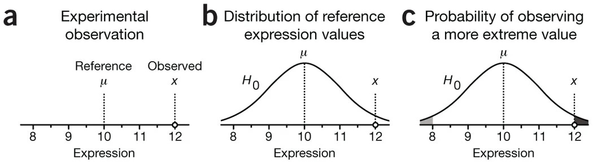

normal_curve <- ggplot(data.frame(x = c(-3, 3)),aes(x = x)) +
stat_function(fun = dnorm, args= list(0, 1))
funcShaded <- function(x) {y <- dnorm(x, mean = 0, sd = 1)
y[x < (0 - 1.96 * 1) | x > (0 + 1.96 * 1)] <- NA
return(y)
}
normal_curve <-normal_curve+stat_function(fun=funcShaded, geom="area", fill="black", alpha=0.2)Clase 5. Inferencia estadística
Inferencia Causal
Irvin Rojas
rojasirvin.com
Centro de Investigación y Docencia Económicas División de Economía
Agenda
Estudiaremos medidas de variabilidad de estimadores
Haremos un breve recordatorio de la anatomía y las propiedades del estimador de MCO
Medidas de variabilidad
Medidas de variabilidad
Haremos un breve recordatorio sobre la precisión de los estimadores que usamos para evaluar el efecto de un tratamiento
Comenzamos con medias pues, en algunos casos, basta con una diferencia de medias para estimar el efecto del tratamiento
Sin embargo, las ideas que veremos son fácilmente trasladables a los estimadores de MCO que resultan cuando usamos regresión
Algunas definiciones
Insesgadez de la media muestral: \(E(\bar{y})=E(y_i)\)
La insesgadez implica que, si obtuviéramos muestras repetidas de tamaño fijo, no habría desviaciones sistemáticas con respecto a \(E(y_i)\)
No confundir con LGN, que implican consistencia cuando \(N\to\infty\)
Varianza poblacional: \(V(y_i)=E((y_i-E(y_i))^2)=\sigma_y^2\)
Desviación estándar: \(\sigma_y\)
Varianza muestral: \(S(y_i)^2=\frac{1}{n}\sum_i(y_i-\bar{y})^2\)
¿Cómo medimos la variabilidad de \(\bar{y}\)
Asumamos que las \(y_i\) son iid
Por otro lado, reemplazando la definición:
\[ \begin{aligned} V(\bar{y})&=V\left(\frac{1}{n}\sum_i y_i\right) \\ &=\frac{1}{n^2}V\left(\sum_i y_i\right) \\ &=\frac{1}{n^2}n \sigma^2_y \\ &=\frac{1}{n}\sigma^2_y \end{aligned} \] donde la última igualdad resulta de la independencia entre las \(i\) y dado que las \(y_i\) vienen de la misma población, entonces tienen la misma varianza
¿Cómo medimos la variabilidad de \(\bar{y}\)
Notemos que la varianza de la media muestral depende de la varianza de \(y_i\), \(\sigma^2_y\), pero también de \(n\)
Es aquí donde una LGN tiene un papel, pues cuando \(n\to\infty\), la varianza de la media muestral tiende a cero
El error estándar queda definido como: \(SE(\bar{y})=\sigma_y/\sqrt{n}\)
Todos los estimadores que usamos tienen un error estándar, algunos con una forma más complicada que otra, pero todos ellos tienen la misma interpretación: resumen la variabilidad que surge por el muestreo aleatorio
- La contraparte muestral del error estándar, formalmente llamado error estándar estimado de la media muestral es:
\[\hat{SE}(\bar{y})=\frac{S(y_i)}{\sqrt{n}}\]
El estadístico \(t\)
Supongamos que queremos probar la hipótesis de que \(E(y_i)=\mu\)
El estadístico \(t\) se define como: \[t(\mu)=\frac{\bar{y}-\mu}{\hat{SE}(\bar{y})}\]
A la hipótesis que queremos probar se le conoce como la hipótesis nula, \(H_0\)
Bajo \(H_0\): \(\mu=0\), el estadístico es \(t(\mu)=\frac{\bar{y}}{\hat{SE}(\bar{y})}\)
Un TLC nos garantiza que \(t(\mu)\) se distribuye normal en una muestra lo suficientemente grande, sin importar la distribución de \(y_i\)
Por tanto, podemos tomar decisiones sobre la \(H_0\), basados en si \(t(\mu)\) es consistente con lo que esperaríamos ver con una distribución normal
Distribución normal
La conveniencia de la distribución normal es que conocemos muchas propiedades teóricas de esta
Por ejemplo, grafiquemos una normal arbitraria con media 0 y desviación estándar 1:
Distribución normal

Por ejemplo, sabemos que el 95% de las realizaciones se encuentran en el intervalo \([\mu-1.96\sigma, \mu+1.96\sigma]\)
De aquí surge que, cuando trabajamos al 95% de confianza (típico en economía), se usa una regla de dedo de 2 para juzgar el valor de un estadístico \(t\)
Un estadístico \(t\) mayor que \(|2|\) indica que la \(H_0\) de que \(\mu=0\) es altamente improbable
Intervalos de confianza
En vez de probar si en una muestra la \(H_0\) se rechaza o no, para muchos posibles valores de \(\mu\), podemos construir el conjunto de todos los valores de \(\mu\) que son consistentes con los datos
A esto le llamamos intervalo de confianza de \(E(y_i)\)
- Un intervalo de confianza es el conjunto de valores consistente con los datos:
\[IC_{0.95}=\{\bar{y}-1.96\times\hat{SE}(\bar{y}),\bar{y}+1.96\times\hat{SE}(\bar{y})\}\]
Si tuviéramos acceso a muestras repetidas y en cada una calculáramos \(\bar{y}\), esperamos que en el 95% de los casos \(E(y_i)\) está en el intervalo de confianza
Noten que el IC no se interpreta como la probabilidad de que el parámetro se encuentre en cierto rango
La interpretación es más sutil, lo que sucedería si tuviéramos distintas muestras de la misma población
Regularmente trabajamos con una muestra
Breve nota sobre teoría asintótica de MCO
Propiedades del estimador de MCO
En la práctica, no conocemos la FEC ni la función de regresión poblacional
En la clase anterior aprendimos que una forma de aproximar la FEC es usando regresión, es decir, quisiéramos conocer \(\beta=E(X_iX_i')^{-1}E(X_iy_i)\), un objeto poblacional
En la práctica aproximamos \(\beta\) con su análogo muestral: \(\hat{\beta}_{MCO}=(X'X)^{-1}(X'Y)\)
Con algo de álgebra, escribimos el estimador de MCO como \[\hat{\beta}_{MCO}=\beta +\left(\sum x_ix_i'\right)^{-1}\left(\sum x_i u_i\right)\]
Multiplicando por \((1/N)^{-1}(1/N)=1\) el segundo término: \[\hat{\beta}_{MCO}=\beta +\left(\frac{1}{N}\sum x_ix_i'\right)^{-1}\left(\frac{1}{N}\sum x_i u_i\right)\]
Esta representación con promedios es útil para usar leyes de grandes números (LGN) y teoremas de límite central (TLC)
Distribución asintótica
- La teoría asintótica nos garantiza que, si \(E(u_i|x_i)=0\) la distribución asintótica del estimador de MCO es
\[\hat{\beta}_{MCO}\stackrel{a}{\sim}\mathcal{N}\left(\beta,(X'X)^{-1}X'uu'X(X'X)^{-1}\right)\]
Estos son resultados asintóticos, válidos cuando \(N\to \infty\)
Son convenientes porque no asumimos forma distribucional sobre los errores
En los cursos introductorios de econometría asumíamos, entre otras cosas, errores normales y homocedásticos
Aquí tenemos menos supuestos
La distribución asintótica nos dice que el estimador de MCO tiene una distribución normal y que su varianza depende de la varianza de los errores
Estimación de la varianza
Tenemos que estimar también la varianza del estimador de MCO
En un influyente artículo, White (1980) muestra que podemos estimar consistentemente \(\hat{V}(\hat{\beta}_{MCO})\) usando:
\[\hat{V}(\hat{\beta}_{MCO})=(X'X)^{-1}\left(\sum_i \hat{u}_i^2x_ix_i'\right)(X'X)^{-1}\] - Esto es a lo que conocemos como la matriz de varianzas robusta a heterocedasticidad
Son robutos porque no hacemos supuestos sobre la distribución de los errores
En muy raras ocasiones, si asumimos errores independientes e idénticamente distribuidos:
\[\hat{V}^H(\hat{\beta}_{MCO})=\hat{s}^2(X'X)^{-1}\] donde \(\hat{s}\) es la varianza muestral
Errores estándar del estimador de MCO
- Partiendo del estimador de la matriz de varianzas del estimador de MCO propuesto por White (1980)
\[\hat{V}(\hat{\beta}_{MCO})=(X'X)^{-1}\left(\sum_i\hat{u}_i^2x_ix_i'\right)(X'X)^{-1}\]
el error estándar de \(\hat{\beta}_k\) será la raíz cuadrada de la \(k\)-ésima entrada sobre la diagonal principal de \(\hat{V}(\hat{\beta}_{MCO})\) y lo denominamos \(\hat{EER}(\hat{\beta}_k)\) por venir de una matriz de varianzas robusta
- Con los mismos principios que para la media muestral, una estadístico \(t\) se define como:
\[t(\beta_k)=\frac{\hat{\beta}_k-\beta_k}{\hat{EER}(\hat{\beta}_k)}\]
Prueba de hipótess
- En la sesión anterior motivamos el uso de regresión para estimar efectos de tratamiento:
\[y_i=\alpha+\beta T_i +\gamma_1 x_1 + \gamma_2 x_2 + \ldots + \gamma_{K-2} x_{K-2} + u_i\]
Supongamos que el tratamiento fue asignado aleatoriamente y el diseño permaneció íntegro
Nos interesa entonces probar la hipótesis nula de que \(\beta=0\)
- Un estadístico \(t\) para probar esta hipótesis tiene la forma:
\[t(\beta)=\frac{\hat{\beta}}{\hat{EER}(\hat{\beta})}\] - Bajo la \(H_0\), el estadístico \(t\) se distribuye asintóticamente normal
- Podemos comparar el valor \(t(\beta)\) con la distribución normal teórica para decir qué tan probable es observar dicho valor del estadístico
El valor \(p\)
La otra cara de la moneda de los estadísticos de prueba es el valor \(p\)
El valor \(p\) es la probabilidad de observar un valor mayor que el estadístico cuando la \(H_0\) es verdadera
Un valor \(p\) muy pequeño indica que es muy poco probable observar el estadístico de prueba bajo la \(H_0\), por lo que hay evidencia para rechazar la \(H_0\)
Otra forma de intepretar el valor \(p\) es la probabilidad de que se observen efectos iguales o más grandes a los observados debido al error muestral (por suerte)
Valores \(p\)
Supongamos que un programa incrementa los ingresos en 100 pesos mensuales en promedio, con un valor \(p\) de 0.07
Entonces, si el programa no tuviera efecto, todavía sería posible ver incrementos en los ingresos de 100 pesos mensuales o más en el 7% de los estudios debido al error muestral
En este breve texto de Krzywinski & Altman (2013) pueden leer algunos otros detalles sobre el valor \(p\)

Valores \(p\)
¿Qué tanto toleramos que nuestros resultados puedan ser por suerte?
Fijamos un nivel de significancia \(\alpha\), definido como la probabilidad de rechazar la \(H_0\) dado que esta es verdadera
Es decir, la probabilidad de cometer el error tipo 1 o falso positivo
En economía usamos frecuentemente los valores \(\alpha\) de 0.10, 0.05 y 0.01 para juzgar la significancia de los estimadores
En evaluación, si el valor \(p\) es menor que \(\alpha\) decimos que el efecto es estadísticamente significativo
Nota sobre los valores \(t\) críticos
Los correspondientes valores del estadístico \(t\) en muestras grandes para \(\alpha\) de 0.10, 0.05 y 0.01 son 2.56, 1.96 y 1.64
¿Cómo puedo encontrar el valor \(p\) exacto de un estadístico \(t\) dado?
(1-pnorm(abs(1.644854)))[1] 0.04999996- O uno menos arbitrario
(1-pnorm(abs(-1.3)))[1] 0.09680048- Y al revés, puedo siempre encontrar el estadístico \(t\) asociado a cierto valor \(p\)
qnorm(1-(.1/2))[1] 1.644854- El 2 en las expresiones anteriores viene de que estamos en pruebas de dos colas con una distribución simétrica
Prueba de hipótesis en evaluación
Un camino típico:
Formulamos una pregunta causal \(D_i \to y_i\)
Tengo razones para asumir que \(D_i\) es independiente de \(y_i\) (por ejemplo, hice un experimento)
De la clase anterior, sé que una regresión me ayudará a hacer comparaciones:
\[y_i=\alpha+\beta D_i + B'X_i + u_i\]
Formulamos la \(H_0\): \(\beta=0\), es decir, no hay efecto del tratamiento
Estimo la regresión, obtengo \(\hat{\beta}\), y construyo \(t=\frac{\hat{\beta}}{\hat{se}(\hat{\beta})}\)
Prueba de hipótesis en evaluación
… un camino típico
El software me arroja: \(\hat{\beta}\), \(t(\hat{\beta})\) y \(p\)
\(t(\hat{\beta})\) y \(p\) son dos caras de la misma moneda
Si \(p>\alpha\), hay una probabilidad de observar \(\hat{\beta}\) debido al error muestral mayor que \(\alpha\)
O, en términos de \(t\), es altamente probable observar el estadístico bajo la \(H_0\), por lo que no se rechaza la \(H_0\)
Las hipótesis no son exclusivamente de efectos de tratamiento
Otras hipótesis:
- Las características observables están balanceadas
- La atrición ocurrió al azar
Próxima sesión
Haré algunas definiciones de la literatura de efectos de tratamiento
- CT, Capítulo 25, Secciones 1 y 2
Presentación creada usando el paquete xaringan en R.
El chakra viene de remark.js, knitr, y R Markdown.
Material de clase en versión preliminar.
No reproducir, no distribuir, no citar.